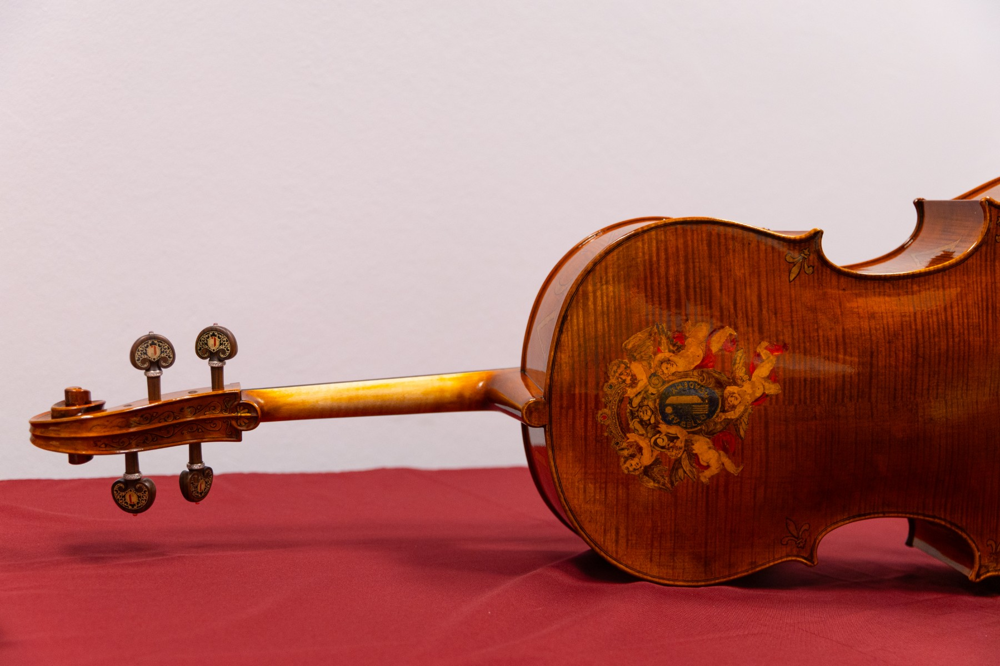
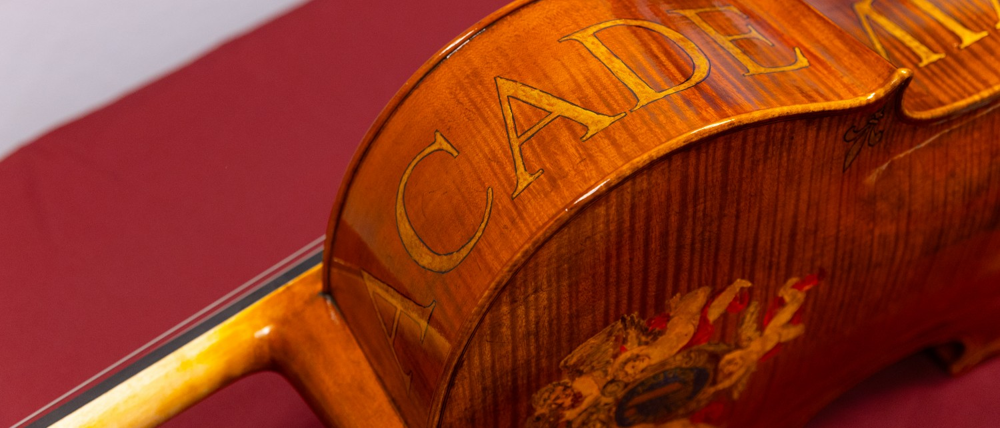
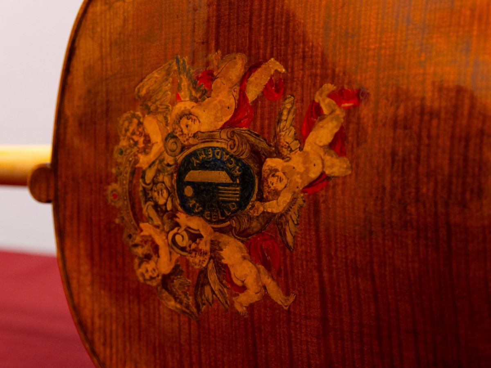
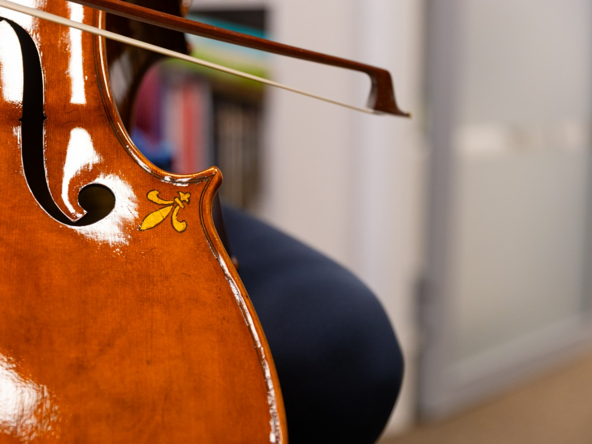
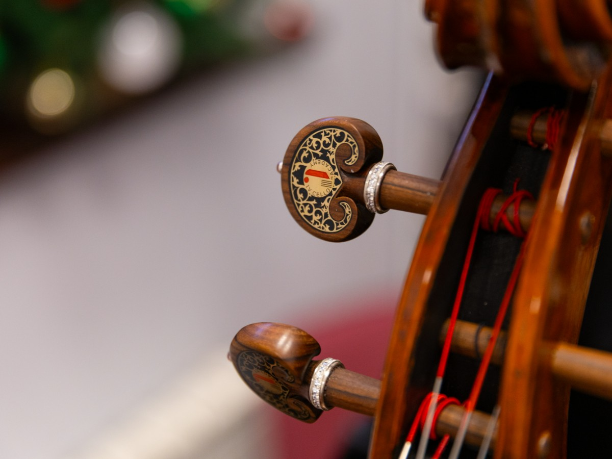
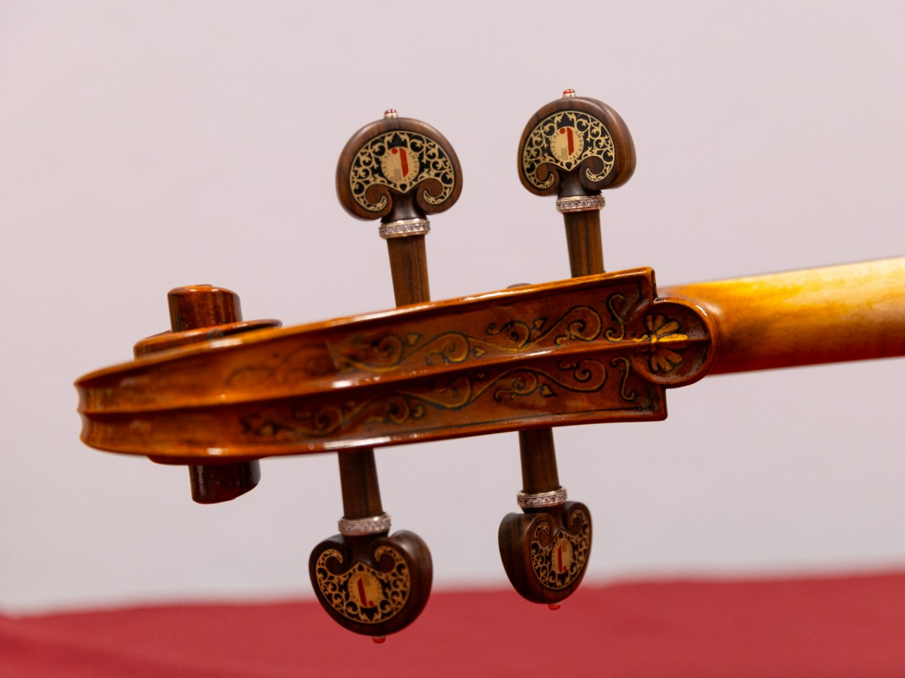
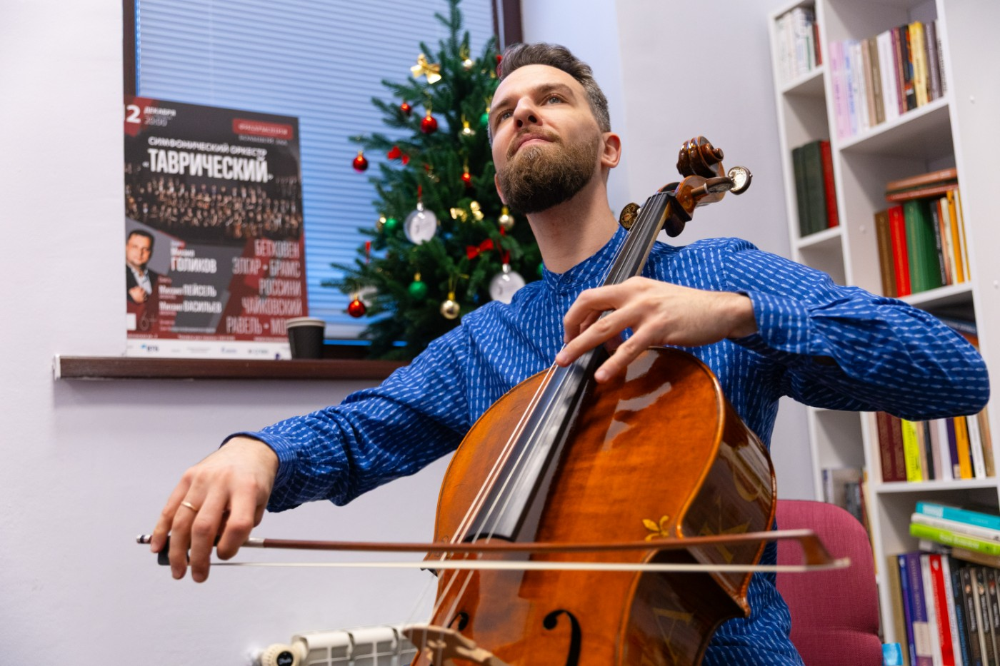

Инструментальный фонд

Инструментальный фонд Виолончельной академии — одно из направлений системной поддержки профессионального развития виолончелистов.
Академия по собственной инициативе предоставляет инструменты из своего фонда музыкантам, чьё профессиональное развитие считает важным поддержать: постоянным участникам проектов Академии, молодым перспективным виолончелистам и другим артистам, связанным с её деятельностью.
Особое место в фонде занимают инструменты, созданные мастерами специально для Виолончельной академии.
В 2026 году мастер Роман Наумов изготовил для Академии виолончель, которая вошла в постоянную коллекцию Инструментального фонда.
Ещё один уникальный инструмент фонда — виолончель работы Габриэля Джебрана Якуба, также созданная специально для Виолончельной академии. Первым музыкантом, сыгравшим на новом инструменте, стал Александр Рамм.




Габриэль Джебран Якуб

Габриэль Джебран Якуб — виолончелист и всемирно известный мастер струнно-смычковых инструментов, учившийся и работавший в Кремоне. Его инструменты звучат в ведущих оркестрах мира, а среди музыкантов, с которыми мастер работал, — Наталия Гутман, Гидон Кремер, Миша Майский, Йо-Йо Ма, Жанин Янсен, Александр Бузлов и Александр Рамм. Якуб также является главным хранителем инструментов Фонда Даниэля Баренбойма в Берлине и сотрудничает с рядом крупных международных музыкальных фондов.
Виолончельная академия не только приобретает инструменты для своего фонда, но и выступает инициатором создания новых инструментов специально для Академии. Так фонд постепенно формирует собственную коллекцию современных мастеровых инструментов, каждый из которых создаётся для активной профессиональной жизни — концертов, проектов Академии и работы молодых музыкантов.